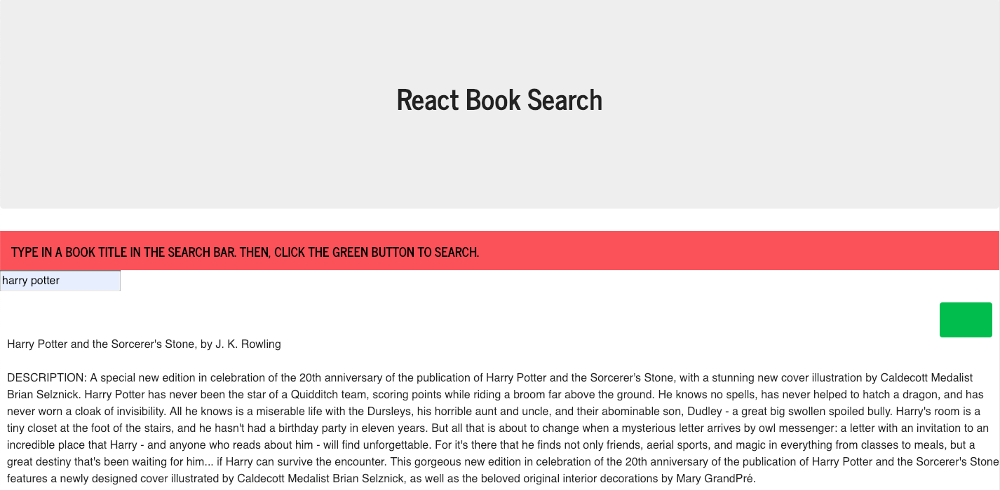

Portfolio
The Psychic Game
This is an HTML/CSS/JavaScript app for users looking for a guessing game. The player clicks any letter key to start, and keeps pressing keys to guess which letter the computer randomly selected. If the player does not guess correctly after nine tries, the user loses and the computer selects a new letter. If the player guesses correctly, she or he wins and a new random letter is generated.

•Deployed Page
•Code Repository
CrystalsCollector!
This app is a game that tests your memory and arithmetic skills. The user is given a random number at the start. There are four images of crystals. By clicking on an image, the user will add a specific amount of points to her or his total score. You win the game by matching your score to the random number, and you lose the game if your total score goes above the random number. The value of each crystal is hidden from you until you click on it. Each time the game starts, the value each crystal changes. The technologies used in this application include JavaScript, JQuery, HTML, and CSS.

•Deployed Page
•Code Repository
Geography Trivia Game
This is an app for users looking to test their geography knowledge. After the user starts the game, she or he answers several true or false questions. The user has 30 seconds to complete the quiz. After this time expires, the user sees a game over screen that lists how many right answers, wrong answers, and unanswered questions she or he had. The technologies used in this application include JavaScript, JQuery, HTML, CSS, and Bootstrap.

•Deployed Page
•Code Repository
DogTastic
This is a HTML/CSS/JavaScript GIF app for dog lovers. It uses the GIPHY API to facilitate the process of searching for GIFs of favorite dog breeds - users can conduct a focused, topic-specific search instead of relying on general search engines like GIPHY or Google. It populates the page with ten gifs, which the user can pause and start.

•Deployed Page
•Code Repository
Train Scheduler
This is an app that facilitates the process of scheduling trains: it functions as a tool for planning vacations, commutes, and various types of travel. It allows users to input information about trains: their names, destinations, first arrival times, and frequencies. The app uses this information to tell the user when the next train will arrive, and how many minutes away it is. The technologies used in this application include JavaScript, JQuery, HTML, CSS, Bootstrap, and Firebase.

•Deployed Page
•Code Repository
Know Thy Rep
This is a voter education tool that was produced as a group project. It is search engine app that allows users to look for U.S. Senators and U.S. Representatives. The app returns basic information about these elected officials along with videos. The technologies used in this application include JavaScript, JQuery, HTML, CSS, Bootstrap, Firebase, and two APIs from ProPublica.

•Deployed Page
•Code Repository
LIRI Bot App
This is a simple command line search engine created with Node.js. It allows a user to find information about various concerts, movies and songs. The technologies used in this project include JavaScript, Node.js, the Bands in Town API, the OMDB API, and the Spotify API.

•Code Repository
Constructor Word Guess
This is a JavaScript word guess game that runs as a command line Node.js program. The game logic is based on constructor functions and randomly generated words from a collection of U.S. state names. The app is similar to the Wheel of Fortune game show. Players have a certain number of chances to guess the letters in a word: correct letters are displayed and letters that have not been guessed appear as dashes.

•Code Repository
Node.js-MySQL-Storefront
This application uses Node.js (with MySQL and Inquirer) to create an electronic storefront. It allows the user to purchase a specific quantity of products from a few different store categories. If there is a sufficient quantity of the requested product, the program allows the mock order to go through and updates the database accordingly. If not, it lets the user know that there are not enough units in stock. The technologies used in this app include JavaScript, Node.js, the Inquirer NPM package, SQL and MySQL.

•Code Repository
FriendFinder
This is an Express.js app that uses the path NPM module. It allows users to input some personal information and survey responses. Following this, it then takes the data and matches the user to someone with similar responses.
•Deployed Page
•Code Repository
Eat-Da-Burger!
This is a full stack restaurant application. It allows customers or people in the restaurant injury to add burgers to a database and to keep track of which ones have been eaten. Whether the user is a foodie keeping tack of what they want to eat or somebody working in or managing a burger-oriented restaurant, this app can help. The technologies used in this app include JavaScript, JQuery, HTML, Handlebars, CSS, Bootstrap, Node.js, SQL and MySQL.

•Deployed Page
•Code Repository
Trivia!
This is a trivia game game built as a group project. It is intended to be the basis for a gamified learning system for children in grade school. Technologies used include JavaScript, JQuery, HTML, CSS, Bootstrap, and Sequelize.

•Deployed Page
•Code Repository
News Scraper
This is a Mongoose-based app that scrapes news articles from NPR. It also makes use of Express, Handlebars, Cheerio, and axios.
•Deployed Page
•Code Repository
Clicky Game
This is a memory game created with React.js. After the user clicks a particular image, all images are shuffled. A player wins by clicking each image once and only once.

•Code Repository
•Deployed Page
React Book Search
This is a book search engine built in React.js. It implements the Google Books API to help users develop a reading list.
